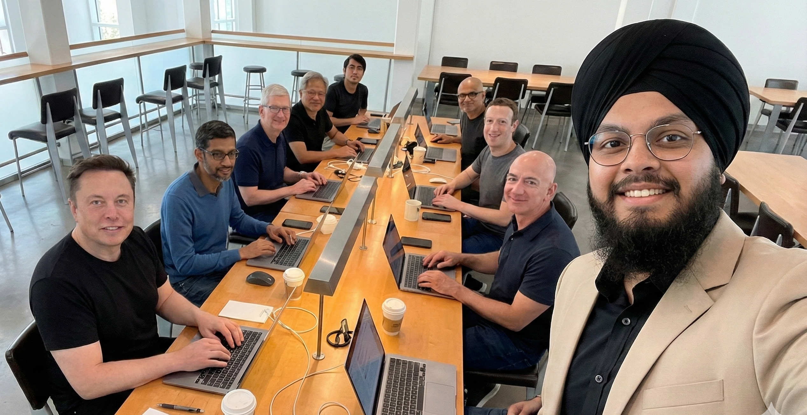

About Me
I am an MS student in Artificial Intelligence at the University of Texas at Austin (GPA 4.0) and a full-time AI Engineer at RediMinds Inc.
I build for domains where failure is not an option. My systems are in production today: domain-specific RAG pipelines at massive scale helping governments make ocean policy decisions and giving doctors clinically grounded evidence for insurance reviews, multi-agent architectures automating enterprise workflows, and physics-informed models extracting deformation signals from satellite radar to help prevent geophysical disasters.
I approach research with the mindset of an engineer: if it does not work in production, it does not count. My work spans AI for Science, Trustworthy AI, Multi-Agent Systems, Physics-Informed ML, and Multimodal NLP, published in Nature Portfolio, presented as an oral at ICLR 2026, and accepted at ACL 2026.
Researcher. Engineer. Founder in progress.
Latest News
Behind the Code ✨
A music lover turned coding enthusiast, crafting symphonies with algorithms. 🎵🤖
Hi, I'm Prabhjot Singh! Outside of the strict, hyper-professional world of research papers and production deployments, I am just someone who is deeply obsessed with how things work.
I am fueled by an unwavering enthusiasm for Machine Learning, but my brain needs creative outlets to keep functioning. That is where music comes in. 🎹 I love playing musical instruments, it’s how I decompress and find rhythm when the code isn't cooperating.
When I am not aggressively hunting down edge cases in multi-agent LLM pipelines or deep in focus mode at 2 AM, I am probably indulging in a terrifying amount of pizza. 🍕
Ultimately, I view technology as a tool for leverage. I have a burning desire to build systems that actually survive contact with reality, rather than just looking good on a whiteboard. My ultimate long-term goal is to build and lead my own AI startup focused on trustworthy, production-grade systems. 📈
I am currently putting in the reps and laying the groundwork for that venture. In the meantime, I have assembled a world-class intern team to practice my management skills on. They are unpaid, fictional, and suspiciously famous. (See undeniable, 100% photorealistic, definitely-not-AI-generated photographic evidence below). 📸😎

Disclaimer: This is a joke. The interns are not real. The ambition, unfortunately, is.
Why BTech? Why Engineering?
The real, unfiltered, brutally honest reason I chose this path. Give it a listen.
Publications
Peer-reviewed papers, workshop publications, and works under review.
Projects
Research projects, production systems, and independent work.
Curriculum Vitae
A detailed record of my academic and professional journey. Download PDF ↗
Prabhjot Singh
Panipat, Haryana, India · Remote · UTC+5:30
Education
MS in Artificial Intelligence · The University of Texas at Austin
- Focus: NLP, Vision-Language Models, Multi-Agent Systems
- Compute: TACC Vista (GH200 nodes)
B.Tech in CSE (AI & Data Science) · Kurukshetra University
- 100% Merit Scholarship: Awarded a full tuition waiver for all four years of study based on academic excellence.
- University Rank 1: Gold Medalist (First Year).
- University Rank 2: Silver Medalist (Pre-final Year).
Work Experience
AI Engineer · RediMinds Inc.
IPOS Ocean GPT - Ocean Policy RAG System (npj Ocean Sustainability, Nature Portfolio)
- Independently designed and implemented the entire PostgreSQL schema on GCP, building a system that indexes over 800,000 documents from 47 sources including OpenAlex, Semantic Scholar, FAO, UNEP, and the International Maritime Organization.
- Built automated ETL pipelines using GCP Cloud Run for large-scale parallel ingestion, deduplication, and vector embedding generation across scientific papers, policy documents, and NGO datasets.
- Engineered a multi-agent RAG framework with a dedicated Reference Checker Agent, achieving a 0% citation hallucination rate across all evaluated queries.
- Developed a real-time News Agent integrating Bing Search API, with iterative prompt engineering to ensure source accuracy and recency.
- Built three distinct evaluation frameworks: Agentic, LLM-as-a-Judge (Grok and Deepseek as judges), and a Reference Quality Evaluator, producing the first comprehensive evaluation suite for the system.
- System was successfully piloted with the Government of Seychelles to accelerate circular economy policy decisions around marine plastic pollution.
Evidence Support System - Medical RAG Pipeline
- Designed and evolved a normalized PostgreSQL schema across multiple iterations, ultimately housing 70,000+ clinical documents across ODG, MD, State, ACOEM, MCG, Cascade, and InterQual guideline types.
- Built specialized ingestion pipelines per guideline type, including PubMed and PMC API integration, OCR-based PDF parsing (benchmarked pytesseract, markitdown, and Gemini OCR), and full-document indexing for state guidelines.
- Reduced retrieval latency to under 1 second through two targeted optimizations: switching from 32-bit to 16-bit halfvec embeddings (scaling dimensionality from 768 to 3072 without performance degradation) and implementing a multi-tier indexing strategy combining HNSW, B-Tree, and GIN indexes.
- Validated system reliability using LLM-based evaluation against Claude and Gemini, achieving 100% reference accuracy and top quality scores across all tested clinical cases.
- Refactored backend from FastAPI to Flask, built production endpoints, and deployed an internal Streamlit testing interface used for company accreditation.
- Migrated the entire backend to the new google-genai SDK, integrating support for gemini-3.1-pro-preview and gemini-3-flash-preview with dynamic global endpoint routing.
IRO Project - Healthcare Credentialing Pipeline (28 US States)
- Conducted field-level credentialing mapping across all 50 US states and delivered a structured comparative report to the team.
- Built end-to-end license and sanctions check pipelines for 28 states, covering NPI API integration, state website scraping with reCAPTCHA handling, license number normalization, and automated credential verification.
- Integrated OIG-LEIE federal sanctions checks and standardized all outputs into a unified schema for automated report generation in PDF and markdown.
Salish Sea Digital Twin - Marine Habitat Simulation
- Developed and deployed a YOLOv8-based fish detection and classification model achieving 94% accuracy, enabling real-time marine species identification inside an Unreal Engine 3D simulation.
- Engineered Physics-Informed Neural Networks (PINNs) for underwater hydrology prediction achieving 97% accuracy, with real-time current and tide data visualized as dynamic 3D flowlines and arrows.
- Integrated live NOAA telemetry data and built real-time pipelines synchronizing environmental metrics with EMF visualizations, tidal turbine dashboards, and wave energy modules.
- Contributed to a published methodology for assessing and monitoring marine benthic and pelagic habitats in the Salish Urban Sea System, demonstrating how AI and digital twins can reduce adverse environmental impacts at tidal energy harvesting sites.
- Deployed the entire backend to GCP, independently navigating the platform and delivering a production system used in active marine research.
Agentic AI Systems
- Evaluated CrewAI, LangGraph, n8n, and custom architectures across multiple projects to establish a unified agentic tech stack at RediMinds.
- Decomposed an employee onboarding and offboarding workflow into 14 automatable components and initiated system design for the full agentic pipeline.
ML Engineer Intern · iNeuron.ai
- Built a mushroom toxicity classifier on a balanced dataset of 8,124 instances (3,916 poisonous, 4,208 edible), achieving 100% accuracy, precision, recall, and F1 through rigorous data preprocessing and model selection.
- Deployed as a full-stack web application using Python, Flask, HTML, and CSS.
Technical Skills
Achievements
- Invited reviewer, FAGEN Workshop at ICML 2026
- First-author oral presentation at ICLR 2026 (ML4RS Workshop)
- First-author paper accepted at ACL 2026 (C3NLP Workshop)
- Co-author, npj Ocean Sustainability (Nature Portfolio), accepted March 2026
- Amazon ML Summer School 2023, selected from 25,000+ applicants
- University Top Ranker: 1st in Year 1, 2nd in Year 3, Kurukshetra University
- District 2nd Rank, Panipat, AISSCE 2018
- 7 consecutive Gold Medal Merit Scholarships
- LeetCode 3-star (Rating 1596) · CodeChef 3-star (Rating 1719)
Contact
Open to research collaborations, technical discussions, and Senior AI / Applied Scientist roles.